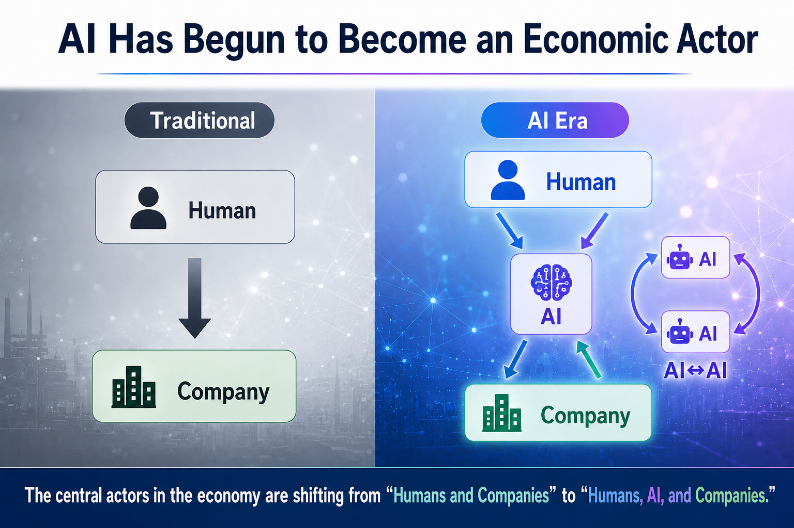
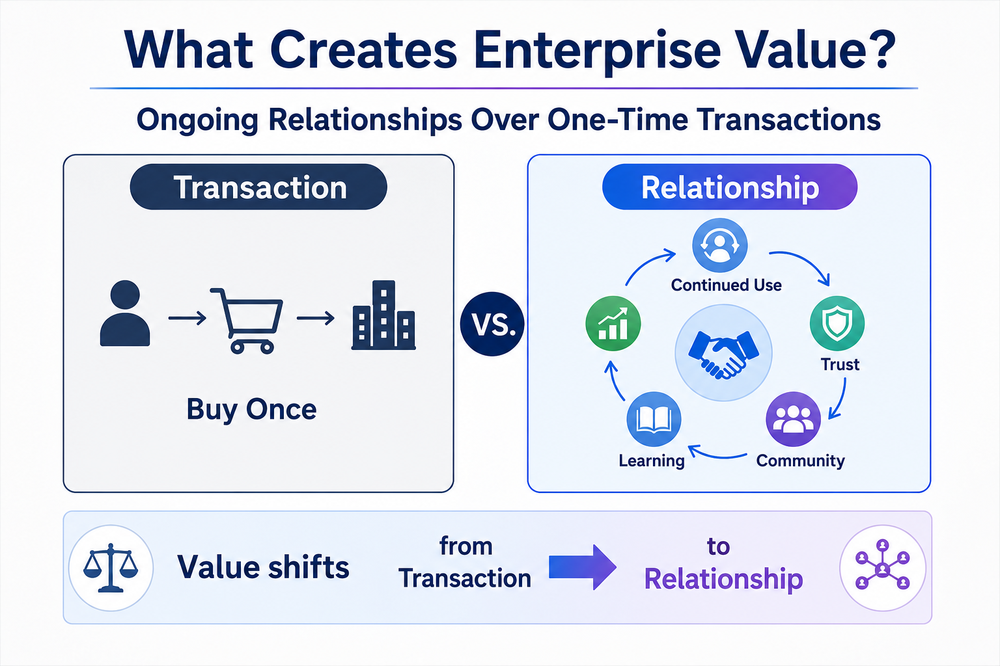
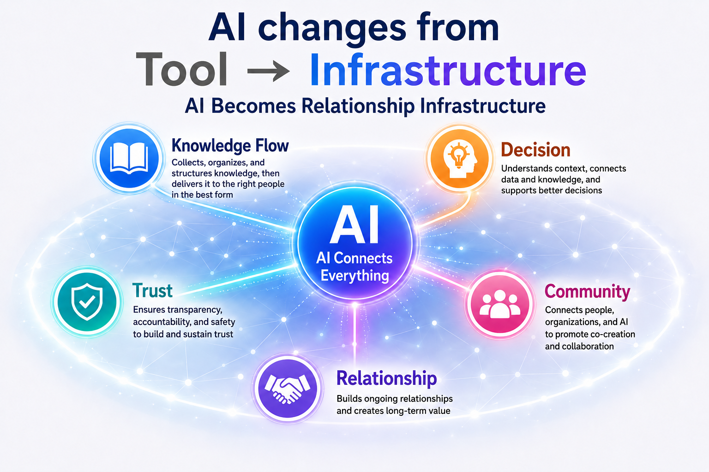
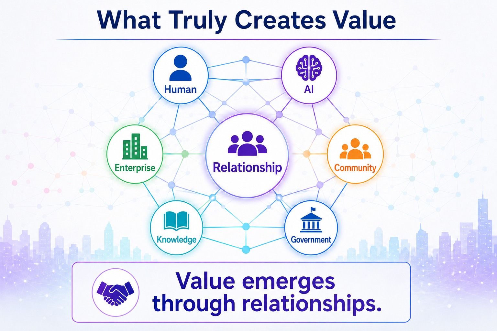
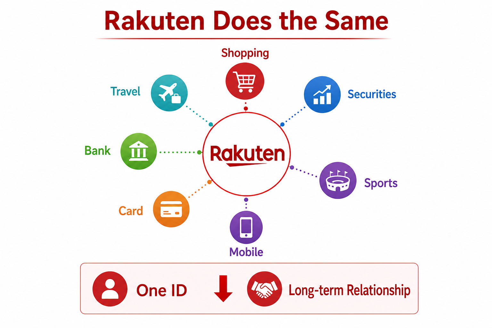
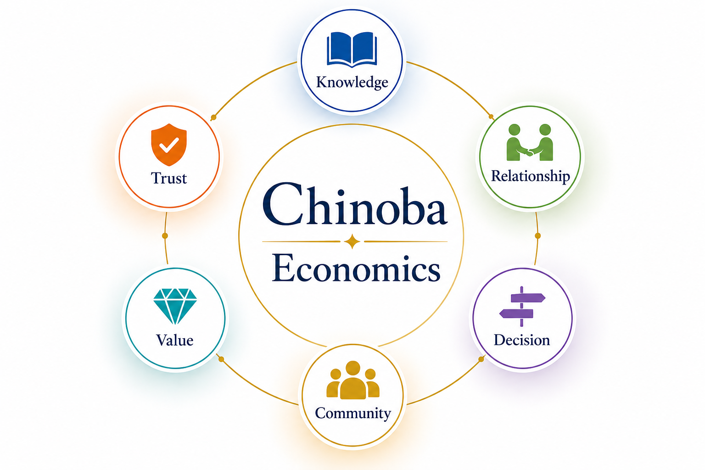

AI is no longer only a tool that analyzes and generates. It references knowledge, reads a situation, weighs options, coordinates with people and other AI, and acts within a granted authority.
A single transaction can no longer explain where that value comes from. Chinoba Economics reads AI-era value creation as a circulation — Knowledge Flow, State Understanding, Decision, Outcome, Trust, and Relationship returning as new knowledge — rather than a series of one-off exchanges. This page presents that circulation as a research framework for understanding value creation in the AI era, not as a settled law of economics.
The practical guide behind this page's argument — how Knowledge Flow, Decision, and Trust circulate into Relationship Capital, and how an organization, region, or community can design its own economic sphere around that circulation instead of around transactions alone.
View on Amazon → ASIN B0HFH4SWKS · Kindle · Masao WatanabeThe new practical guide above leads this line of inquiry. Below it are the neighboring Chinoba books, videos, and the essay that build the Relationship Economy argument used throughout this page.
Neighboring practical guides on the knowledge, decision, and trust circulation this page draws on.
Video introductions to the shift from a transaction-centered economy to a relationship-centered one.
The long-form essay behind this page's argument, on AI economics and intelligence field economics.
For most of the digital economy, humans acted and companies responded. AI is beginning to sit between them — referencing knowledge, forming an understanding of the situation, comparing candidate decisions, coordinating with other AI, and acting inside a defined authority. That shift is what this research treats as Chinoba Economics: a way of reading AI-era value creation as a circulation, not a settled law.

A tool executes an instruction and returns a result. A participant references what is known, understands the current situation, weighs candidate actions against constraints and policy, and coordinates its own execution with the people and other AI around it. Once AI operates this way, the value it helps create can no longer be read off a single exchange.
Knowledge Flow
↓ State Understanding
↓ Decision
↓ Action / Coordination
↓ Outcome → Trust → Relationship
Chinoba Economics does not claim to replace accounting, price theory, or contract law. It offers a lens for the part those frameworks were never built to see: how knowledge, decisions, and trust circulate between the people, organizations, and AI that take part in a transaction, before and after it happens.
Value is not
only what changed hands.
It is what
circulates afterward.
Transactions remain essential — accounting, contracts, pricing, and settlement all depend on them. But a transaction alone rarely shows which knowledge supported a decision, whose contribution led to the outcome, or how that outcome changed trust and the next collaboration. As AI takes part across knowledge, decision, and execution, the unit of value creation widens from the transaction itself to the ongoing cycle of relationship and learning around it.

Relationship Economy does not argue against buying, selling, or pricing. It argues that a transaction is best understood as one visible event inside a longer cycle — the moment where knowledge, decision, and action are provisionally settled, not the whole story of where the value came from.
Knowledge → Decision → Action
↓
Outcome → Trust → Relationship
↓
New Knowledge
Once AI agents participate across the knowledge, judgment, and execution stages, a purchase or a contract becomes one traceable event in a chain that started before it and continues after it. Relationship Economy repositions the transaction inside that chain rather than treating it as the chain's only visible part.
A transaction is
a moment in a relationship,
not the whole
of the relationship.
This cycle is the page's central model. Value does not end at outcome — it passes through trust and relationship and returns as knowledge the next decision can use.
↻ New Knowledge re-enters Knowledge Flow — the cycle does not end at value creation, it restarts there.
These seven foundations are not independent products sitting side by side. Each implements one part of the Relationship Economy Cycle, and each depends on the others to function — a Decision Trace is only as good as the Knowledge Flow and Community Graph behind it; Trust Infrastructure and Runtime Society only matter once real decisions are being made and acted on.
Makes knowledge distributed across an organization or community usable, while preserving where it came from, what it means, and how current it is.
Reads the present situation of a person, organization, or AI — purpose, intent, constraints, context, role, and capability — not only fixed attributes.
Represents the relationships among people, organizations, AI, places, events, documents, and knowledge as one connected structure.
Connects purpose, rationale, candidates, constraints, policy, choice, execution, and outcome, turning a judgment into a reusable asset.
Sets the conditions for collaboration through identity, policy, boundary, human gate, explainability, and audit.
The operating environment in which people and AI collaborate, negotiate, decide, and act together under defined roles, authority, and rules.
AI that carries a decision through to execution inside that runtime, rather than stopping at a recommendation.
AI's own role shifts across these foundations — from a tool applied to one task, to the infrastructure that connects Knowledge Flow, Decision, Trust, Community, and Relationship into a single operating layer.

Chinoba Economics reads four concepts as a way of noticing what the Relationship Economy Cycle accumulates — not as new line items to replace balance-sheet capital, but as a way of asking what is building up, or eroding, alongside every transaction.
The liquidity, freshness, and traceable provenance of what an organization or community knows — not the size of its archive.
The reusability of past decisions — rationale, constraints, and outcomes preserved well enough to make the next decision faster and better justified.
The accumulated — and sometimes damaged — expectation that a person, organization, or AI will act as it has represented, repaired through explanation and consistency.
The depth and reciprocity of ongoing relationships across people, organizations, and AI, sustained by mutual understanding and fair return.
None of these four are proposed as a single number to optimize. Knowledge, decisions, trust, and relationships are only partly measurable, and reducing them to a score risks the things that make them valuable in the first place — consent, fairness, purpose limitation, the right to contest a judgment, and the ability to exit a relationship. Chinoba Economics treats them as concepts to reason with, not metrics to maximize.
Once AI agents take part in the Relationship Economy Cycle, they do so as limited economic actors — operating within a defined role, authority, policy, and boundary — not as independent legal or moral agents. What an AI can technically do and what it is permitted to do in a given situation are different questions, and keeping them different is the basis of Runtime Society governance.

An AI agent that can technically place an order, approve a claim, or renegotiate a contract is not thereby entitled to. Authority has to be granted for a specific role, in a specific context, under a specific policy — the same distinction Chinoba applies across every runtime, not a special rule for economic activity.
Capability
↓ what it can do
Authority
↓ what it may do, here, now
Humans are not reduced to a final approval click. People design the purpose, boundaries, roles, and responsibilities the runtime operates under; resolve conflicts the system cannot settle on its own; and update the institution itself as conditions change. Governance here means keeping privacy, fairness, explainability, the right to contest a decision, the ability to exit, and protection against excessive surveillance or manipulation as conditions of value creation, not costs weighed against it.
Efficiency decides
what is possible.
Governance decides
what is allowed.
The same cycle reads differently across economic spheres — what changes is which knowledge flows, whose state is being understood, and whose trust and relationship are at stake. These are not simply places AI gets applied; they are where Knowledge Flow, State Understanding, Decision Trace, Trust, and Relationship become concrete enough to govern.
Local knowledge about residents, businesses, and resources flows into decisions on services and investment, where trust and relationship determine whether a community keeps returning value locally.
Understanding fans, athletes, and sponsors as ongoing relationships — not single ticket or merchandise transactions — turns loyalty and trust into a traceable, governable asset for a club or league.
Decision Trace across knowledge work makes an organization's judgment reusable, while Trust Infrastructure governs how far an AI agent's authority extends inside an approval chain.
Knowledge about equipment state and process context feeds decisions on the line, where outcome and trust — not just throughput — determine whether a partner or supplier relationship continues.
Public institutions turning algorithmic decisions into accountable, contestable outcomes need Decision Trace and Trust Infrastructure at least as much as private enterprise does — arguably more.
A creator's value depends less on any single sale than on an audience relationship built from shared knowledge, consistent trust, and outcomes an AI-assisted workflow can help sustain, not replace.
A single relationship-based identity can connect several economic spheres at once — retail, finance, travel, and sports — turning what would be many separate transactions into one continuing relationship the platform can understand and act on.


Relationship Economy does not argue that transactions disappear. It makes visible how knowledge, decisions, action, outcome, trust, and relationship connect — and how each cycle returns as the next round's knowledge. When AI participates deeply in economic life, efficiency alone is not enough. The conditions for collaboration, responsibility, explanation, recoverability, and fair return must be designed alongside it. Chinoba Economics is the search for that implementable structure.
{kind=link}
{kind=link}
{kind=link}
{kind=link}
{kind=link}